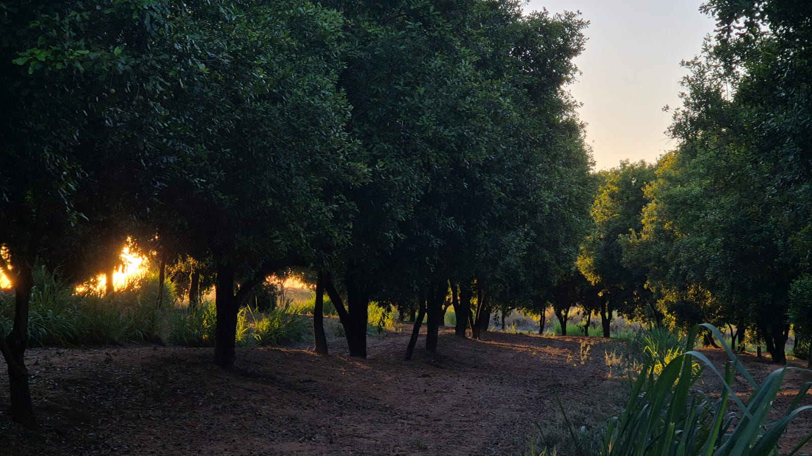

MELKA MACADÂMIA
Nozes de qualidade
Somos uma agroindústria familiar. Cultivamos, industrializamos e comercializamos Noz Macadâmia com paixão, acreditando em uma vida mais saudável e natural.
SAIBA MAISSomos uma agroindústria familiar, cultivamos, industrializamos e comercializamos Noz Macadâmia porque acreditamos numa vida mais saudável.
Desenvolvemos nosso trabalho primando a qualidade e isso reflete tanto em nossos produtos quanto ao meio ambiente. Já que a nogueira macadâmia com suas árvores frondosas contribuem para capturar gás carbônico da atmosfera além de proporcionar sombra aos trabalhadores. Sua amêndoa é considerada um alimento funcional por equilibrar os níveis de colesterol, além de ser muito saborosa.